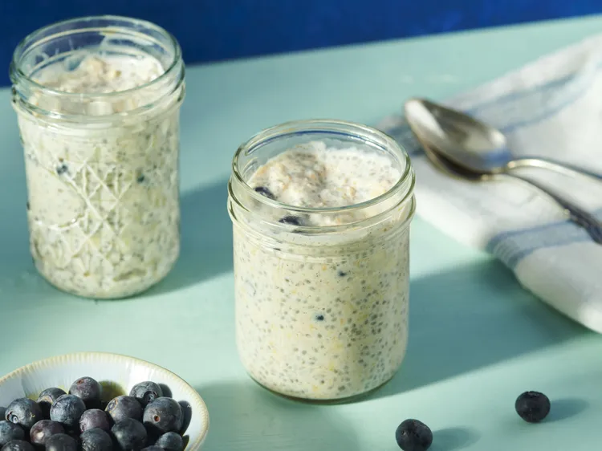

Easy Overnight Oatsmeal

Description
I love overnight oats! They're easy to make-ahead for a quick, on-the-go breakfast.
Though this recipe calls for blueberries, you can use almost any fruit. Bananas, peaches, or any variety of berries work best.
Top with your favorite nuts or seeds.
Ingredients
- 1/3 cup Milk: Use cow’s milk, oat milk, almond milk, or whatever milk alternative you prefer.
- 1/4 cup Greek Yogurt: Greek yogurt lends richness, flavor, and lots of protein to help you take on the day.
- 1/4 cup Oats: Make sure to use rolled oats.
- 2 teaspoons Honey: Honey lends subtle sweetness.
- 2 teaspoons Chia seeds: Fiber-rich chia seeds add flavor and nutrition.
- 1/4 teaspoon ground Cinnamon: Enhance the overall flavor with ground cinnamon.
- 1/4 cup Berries: Choose fresh, plump, vibrant berries.
Steps
- Gather all ingredients.
- Combine milk, yogurt, oats, honey, chia seeds, and cinnamon in a ½-pint jar with a lid; cover and shake until combined.
- Fold in blueberries.
- Cover and refrigerate, 8 hours to overnight. Enjoy!
Home